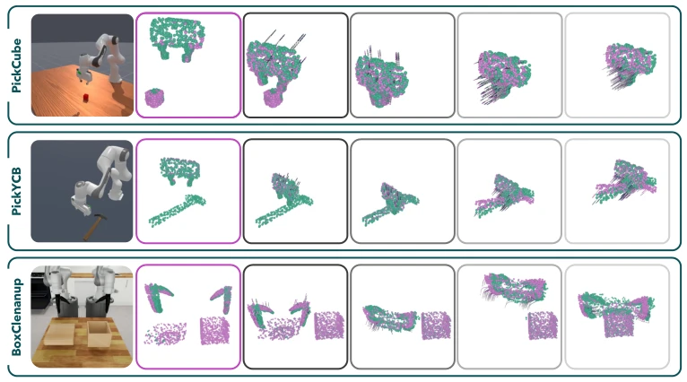
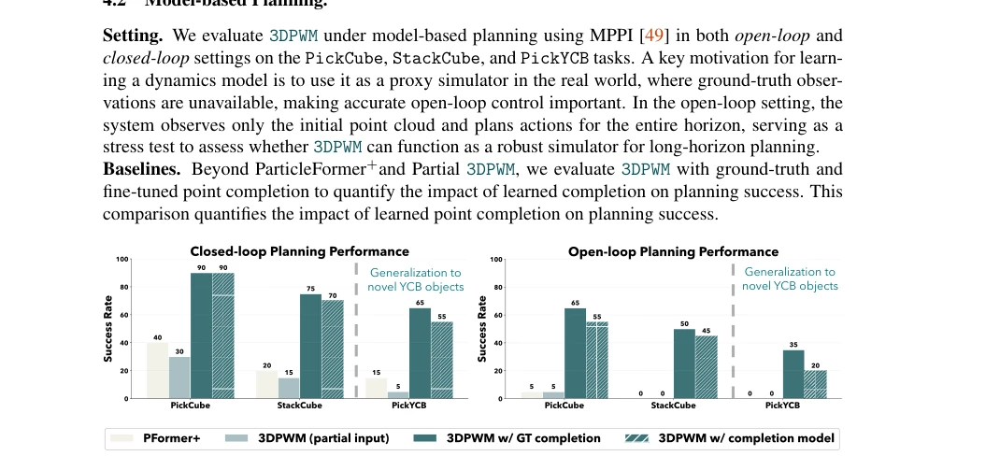
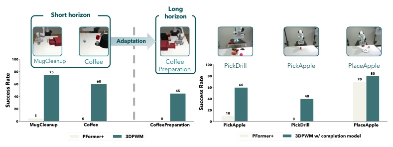
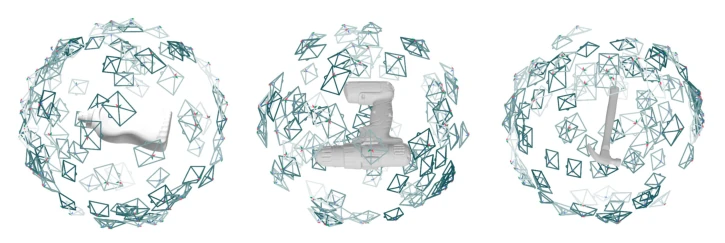
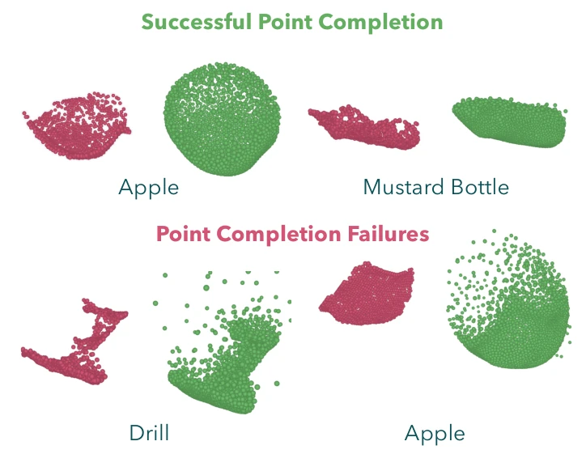
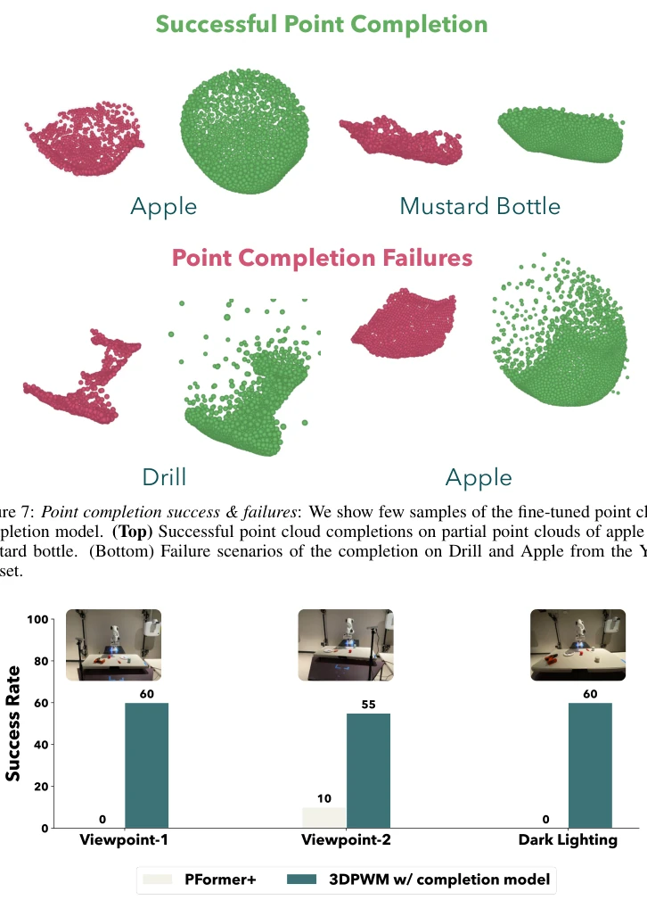

3D Point World Models: Point Completion Enables More Accurate Dynamics Learning
Skand Peri, Hung Nguyen, Chanho Kim, Li Fuxin, Stefan Lee abspdf
论文点评Review
这篇论文给 3D 世界模型来了个“整容手术”。之前的视频模型像画饼，缺乏 3D 结构，长期 rollout 几何不一致；部分点云模型像缺胳膊少腿，受遮挡影响大，累积误差严重。作者直接先补全点云再学动态，逻辑上很顺，毕竟“看不见”的东西确实难预测。但代价是依赖点云补全的准确性，一旦 SAM 或补全模型翻车，后面全完。实验数据挺漂亮，长视界 rollout 稳，但真机部署的延迟和鲁棒性是个大坑，尤其是遮挡严重时补全会失效。总的来说，是“用感知换规划”的典型，聪明但脆弱，适合仿真，真机还得看运气，毕竟感知模块的误差会级联传播，且规划延迟可能影响实时性。
This paper performs a "plastic surgery" on 3D world models. Previous video models are like "drawing a cake", lacking 3D structure, with geometric inconsistency in long-term rollout; some point cloud models are like "missing arms and legs", heavily affected by occlusion, with serious accumulated errors. The authors directly complete point clouds first then learn dynamics, which is logically smooth, after all, things that are "invisible" are indeed hard to predict. But the cost is relying on the accuracy of point cloud completion; once SAM or the completion model fails, everything is ruined afterwards. Experimental data is quite pretty, long-horizon rollout is stable, but latency and robustness in real machine deployment are a big pit, especially when occlusion is severe, completion will fail. Overall, it is a typical example of "trading perception for planning", smart but fragile, suitable for simulation, real machine still depends on luck, after all, perception module errors will cascade propagate, and planning latency may affect real-time performance.
Embodied AI requires accurate world models for planning [1]. Existing video models [10-12] lack explicit 3D structure, with geometric inconsistency in long-term rollout. Partial point cloud models [19, 20] are heavily affected by occlusion, with serious accumulated errors, and rely on Chamfer distance leading to weak supervision signals. Video models also require inverse kinematics [13-15], existing ambiguity. 2.5D models [16-18] also have multi-view inconsistency issues. Existing 3D models either use complete point clouds only in simulation [22, 23], or use partial point clouds in the real world [19], leading to inability to accurately reason the centroid of occluded regions. This paper aims to solve occlusion and error accumulation problems by completing point clouds, achieve more reliable long-horizon planning, support new task adaptation, and make up for the geometric missing problems of partial point clouds in real deployment.

Figure 3: Qualitative rollout results of 3DPWM. Action-conditioned rollouts of 3DPWM over time for five tasks. Ground-truth trajectories are shown in purple, while predicted rollouts are shown in teal. The second column (with purple border) shows the initial observed point cloud, and all subsequent point clouds are generated by rolling out the model using actions from the ground-truth trajectory. A higher overlap between the purple and teal points indicate better accuracy of world model rollouts.
The overall process is divided into two steps: perception completion + dynamics modeling. First, input monocular RGB-D and robot joint angles, use forward kinematics to generate arm point clouds, then use SAM3 to segment scene objects and back-project to obtain partial point clouds, finally restore complete object geometry through point cloud completion model [28], merge to get complete scene point clouds. Dynamics model based on PTV3 [46], input includes position, current and previous time step velocity. The innovation lies in action conditioning: use MLP to encode actions, combined with learnable register token [47] for cross-attention, let relevant points attend to actions, irrelevant points attend to register, ensuring action-relevant points can receive instructions. After predicting point velocities, update point clouds through integration. Training adopts multi-step rollout Huber loss, reducing accumulated errors. Planning uses MPPI [49] to optimize cost function in complete point cloud space, supports open-loop and closed-loop control, utilizes complete geometry to calculate more accurate cost function.

Figure 4: Planning success rate: (Top) Closed-loop planning successcomparing 3DPWM (with and without the completion module), Partial 3DPWM, and ParticleFormer+. 3DPWM achieves the highest success across all tasks. (Bottom) Open-loop planning success on the same tasks, where 3DPWM significantly outperforms prior methods due to higher-fidelity rollouts.
Tested on ManiSkill, MimicGen, DexMimicGen simulation and real Franka robot. Baselines include ParticleFormer+ [19] and Partial 3DPWM without completion module. Metrics use Chamfer distance and reward correlation. Results show 3DPWM has significantly lower Chamfer distance and higher reward correlation on long-horizon rollout (100-300 steps). In planning tasks, open-loop planning success rate far exceeds baseline (baseline nearly 0). Sim-to-Real performance on PickApple etc. tasks is 2.5 times the baseline. Ablation experiments show register token and multi-step supervision are key to performance improvement, but perception module failure leads to cascading errors, and long-horizon task adaptation has execution error accumulation issues.

Figure 5: (Left) Adaptation to unseen tasks: We train 3DPWM dynamics on demonstrations generated on MugCleanup and Coffee tasks and show that it can be used to adapt to a much long-horizon task of CoffeePreparation and achieving 45% success rate. (Right) Sim2Real: We evaluate sim- to-real transfer of 3DPWM on PickApple, PickDrill, and PlaceApple. The static third-person camera setup and objects are shown in the top-right. While 3DPWM and ParticleFormer+perform similarly on the easier placing task, 3DPWM significantly outperforms on the picking tasks.

Figure 6: Point completion Data Generation: Given the mesh/point cloud of the object, we render depth maps from 100 random views around a sphere of 1 unit looking at (0, 0, 0), with the object in centered at the origin.

Figure 7: Point completion success & failures: We show few samples of the fine-tuned point cloud completion model. (Top) Successful point cloud completions on partial point clouds of apple and mustard bottle. (Bottom) Failure scenarios of the completion on Drill and Apple from the YCB dataset.
其他图片Other Figures

Figure 8: Lighting & Viewpoint condition: We tested the robustness of 3DPWM on PickApple task with two additional viewpoints as well as darker lighting condition. (Each plot is averaged over 20 trials.)